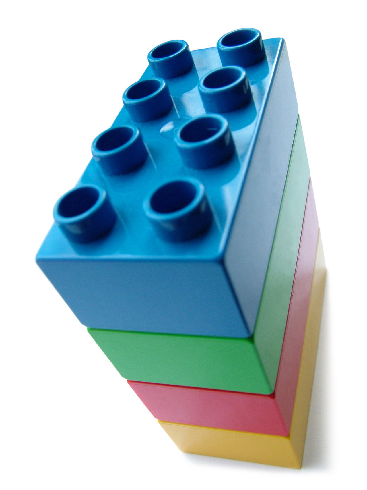

Introduction to R and RStudio
Why R and Not Another Statistical Program?
Statistical Programs versus Statistical Programming Language
- Statistical Programs
- fixed menus
- limited procedures (at least in the menus)
- leads to compartmentalizing models (e.g. ANOVA, regression, GLM)
- Statistical Programming Languages (SPLs)
- Turing complete: if you can create an algorithm you can program it
- Very flexible
- Integration of models: One model to rule them all!
R is a statistical programming language, which means it is a programming language designed specifically to do statistics.
Installing R and RStudio
The goal of this chapter is to get you up and running with the R statistical programming language and the RStudio integrated development environment.
If you are reading this because you are taking one of my courses, you must decide how you want to use R and RStudio for the course. You have two basic options:
- you can install them on your own computer, or
- you can use Auburn Universities education virtual lab (VLab), online.
If you have a computer that you will be using consistently for this course, I recommend installing R and RStudio on that computer. Both are free and will be much easier to use if you install them directly on your computer. If you have decided to install the software on your computer you can skip to the following video. Note, that you must be a student within the university, and have DUO setup to use VLab. If you think you want to use the virtual lab, watch this video:
Installing R
Installing RStudio
R as a Statistical Programming Language
This chapter describes R as a statistical programming language to give you some basic concepts to understand how R works. Such concepts will hopefully help you organize what you are learning about R. This is important because you will not be able to memorize all of the things you need to do to use R. But, having some general concepts to hang what you are learning on, should help you build a solid skill foundation. This explanation will be a gross oversimplification of R, but it should be a good starting model of R that you can build on as you master the language.
Elements of Statistical Programming
An object is a thing that has one or more states, and one or more behaviors. Take for example you cell phone. It has many states, such as on or off, and many behaviors, such as making phone calls, sending texts, or surfing the web. Everything in R is an object. Objects in R are very similar to objects like your cell phone, in that they have states and behaviors. Our goal is to learn how to use these objects to help us do science.
There are basically two types of objects in R: data objects and function objects. Data objects store information, while function objects process or manipulate information.
Expressions
We use objects in R through expressions. An expression is simply a combination of objects that R can evaluate. So, we type something into R, R processes it and gives us the results. For example, if we type 1 + 2 into the R console, it will give us the result 3:
1 + 2[1] 3So, expressions are simply objects or combinations of objects submitted to R in a way R can evaluate them.
Basic Elements of a Good SPL
- a rich set of primitive expressions
- mechanisms for combining expressions into more complex expressions
- means of abstraction, which allow for naming and manipulating compound objects



Primitive Expressions
Everything in R is an object
Primitive objects are the simplest elements of a programming language, and include:
- primitive data
- primitive functions
They can be thought of as the basic building blocks for everything else in the language.
An expression is an input that the programming language can evaluate, and consists of function and data objects.
Primitive Data Types:
Data objects are the primary means of storing information in R. R has a few basic data types:
Numeric -
numericint- integers (1,2)num- real number (1.2, -3.1, 200.0)
character or string -
character"Hello world!","Ten",'Cat'"This is a sentence, which is a string""10"( in single or double quotes, as long as they match)
Boolean or Logical
logicalTRUEorFALSE(use operators such as or, and and not).- They will evaluate to numbers where
FALSEevaluates to zero, andTRUEevaluates to one. - For example. if you enter
TRUE + 1you will get2in return.
mode(TRUE)[1] "logical"TRUE + 1[1] 2Primitive Functions
R uses functions to do all computations.
Operators
- Arithmetic Operators
+,-,*,/,^
- Comparison (also called Boolean, Logical or Predicate) Operators
<,>,==,<=,>=,!=- less than, greater than, equal to, less than or equal to, greater than or equal to, not equal to
- return
TRUEorFALSE
- Logical Operator
&,|,!- also return
TRUEorFALSE
- Other functions
mode()length()sum()sqrt()log()exp()
- Assignment operators (assignment will be discussed below)
<-preferred assignment operator - always use this one=this will also work, but can be confusing (note different from==, the comparison operator)->is also an assignment operator, but we will not use it.
Programming Languages are Not Forgiving
Syntactically valid expressions
Expressions must be syntactically valid.
- syntax (form)
- English: “cat dog boy” - not syntactically valid
- English: “cat hugs boy” - syntactically valid
- programming language:
- “hi” 5 - not syntactically valid
- 3.2*5 - syntactically valid
Semantically valid expressions
- semantics - (meaning)
- English: “I are hungry” - syntactically valid but semantic error
- programming language:
- 3 + “hi” - semantic error (you can’t use addition on character strings)
- Chomsky: “colorless green ideas sleep furiously”
This statement is syntactically valid, but does not make sense, so makes a semantic error.
In R you have to combine expressions in a way that R “understands” and this combination should be meaningful.
Assignment
We will often want to save data in a variable. We can do that with assignment, which utilizes an assignment operator.
x <- 2x[1] 2pet <- "dog"pet[1] "dog"Assignments are special expressions that are composed of three parts, a name, an assignment operator, and an expression.
For the following assignment,
x <- 1:10x is the name, <- is the assignment operator, and 1:10 is an expression. Names in R can be anything that includes letters, numbers, a period (.) or an underscore (_), as long as it begins with either a letter or a period. Here are some valid, followed by invalid names
# Valid
IQ
c3p0
Height_inches
weight.lbs
.hidden
# Invalid (you will get an error message)
_cat
1dog
%sales
Heigth-InchesThere are also some names that cannot be used because they are names of primitive R objects (e.g. if, for, else, in). Type ?reserved in the R console for a complete list.
There are at least three assignment operators, as mentioned above, but it is commonly recommended that you use <-, because it makes clear that you are taking some expression and putting it in an object. So we would say of the assignment of x <- 1:10 that x gets the integers 1 through 10, suggesting that we are putting the integers into the object x.
Just about any expression can be passed to a name with the assignment operator.
Combining Expressions
Complex Data Types
- Scalars, Vectors, Matrices, and Arrays
- Lists
- Dataframes
Grouping Homogeneous Data Types
- combining scalars
c()- combining expressions
{}- combining vectors
cbind()
rbind()Complex Functions
- Vectorization
- Nested Functions
- Loops and Conditional execution
Abstraction
- Assignment
Data Abstraction
Functional Abstraction
Anatomy of a Function
name <- function(arg_1, arg_2, ...) {
expression_1
expression_2
...
output <- expression_3
return(output)
}